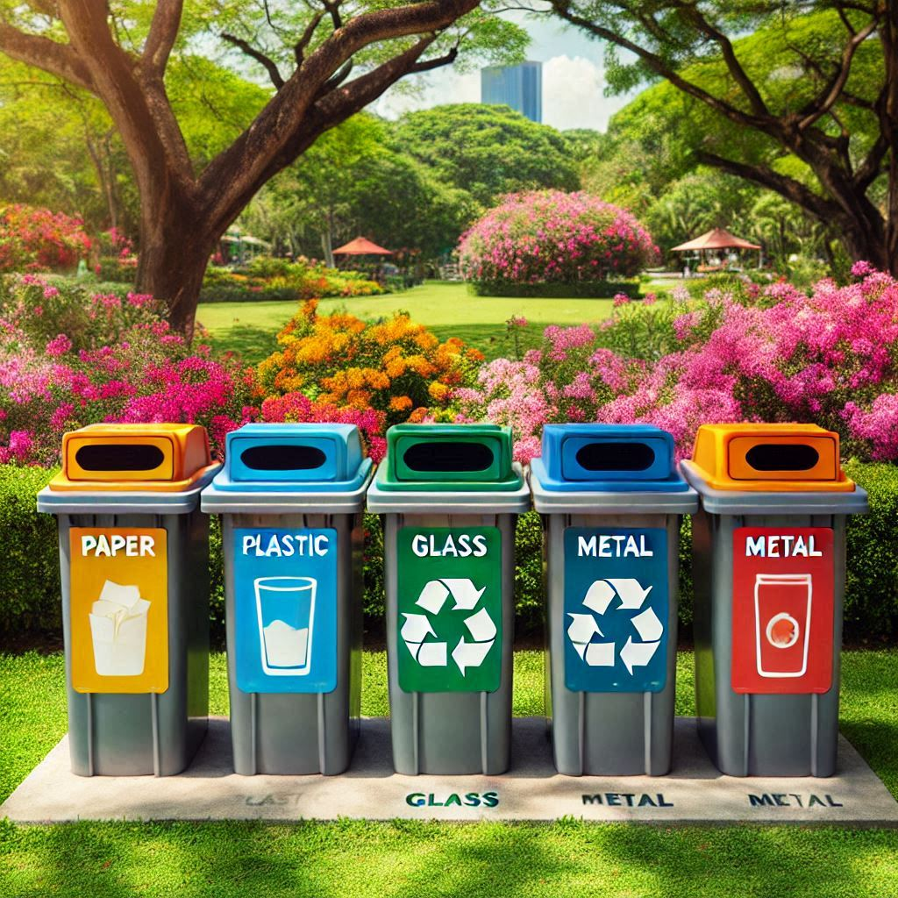

Reciclaje y Reutilización
El reciclaje y la reutilización son prácticas clave para reducir la cantidad de residuos que generamos. Al reciclar, podemos transformar materiales usados en nuevos productos, ahorrando recursos naturales y energía. La reutilización, por otro lado, implica dar una segunda vida a objetos que de otra manera serían desechados.
Beneficios del Reciclaje
- Reducción de residuos en vertederos
- Conservación de recursos naturales
- Ahorro de energía
- Reducción de la contaminación
Talleres y Eventos
Participa en nuestros talleres de reciclaje y aprende cómo puedes contribuir a un mundo más sostenible. Aquí tienes un video sobre nuestros últimos talleres:
Visita la web oficial para más información y recursos.